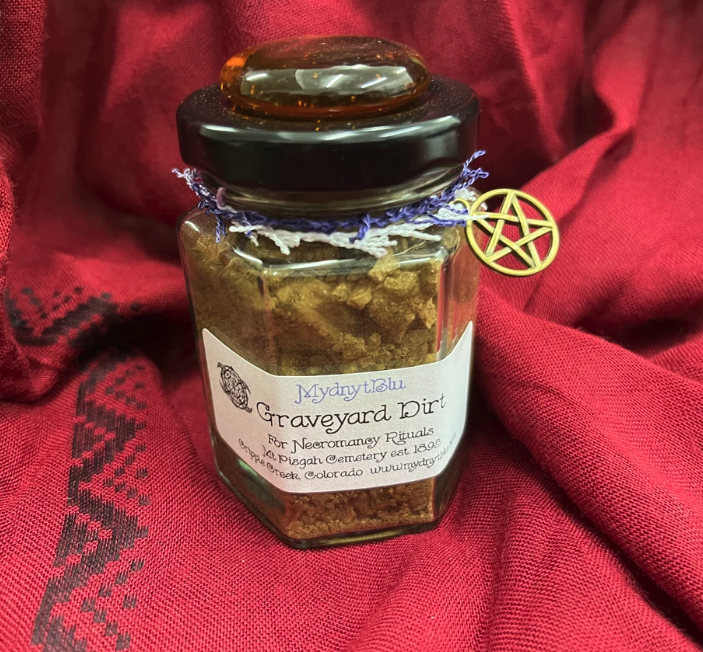

NOTICIAS IMPORTANTES
Dato Curioso #1
Aunque hoy se asocia a la estética gótica o al romance extremo, el concepto viene de los antiguos relicarios de sangre. En la época medieval, se guardaban gotas de sangre de mártires o santos en pequeños frascos como amuletos de máxima protección espiritual.

Dato Curioso #2
Se cree que la tierra absorbe la energía de la persona enterrada. Si se busca protección o justicia, se extrae de la tumba de un policía o un soldado. Si se busca hacer daño, se busca la de un criminal. Para asuntos de amor, se prefiere la tumba de alguien que murió siendo muy amado.
